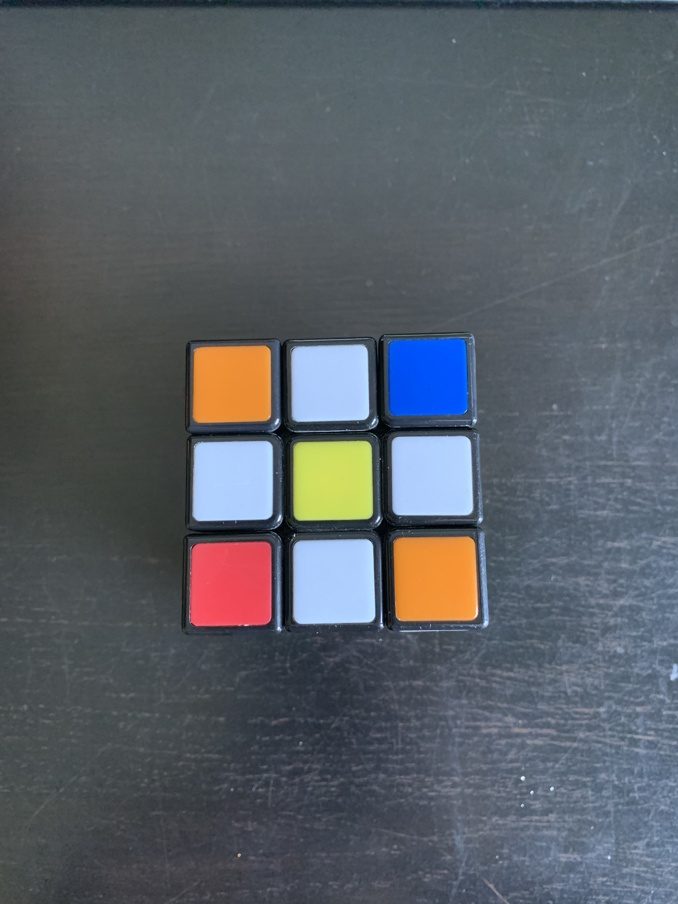

Alles in het blauw is een beweging van de kubus, zie "Algoritmes"
Stap 1: Maak een boterbloem
Van een helemaal willekeurige kubus kan je hier beginnen,
je zoekt het vlak met het gele middelpunt. Elk vlak heeft
maar één middelpunt, nadat je dit gevonden hebt draai je de
kubus zodat geel aan de bovenkant zit en wit vanonder.
Nu ga je zoeken naar de witte middelpunten, zie de foto.
Wanneer je er één gevonden hebt positioneer je ze in de
vorm van een boterbloem(zie foto).
Nu hoef je nog niets te vergelijken met de foto behalve
de witte middelstukken vanboven en het gele middelpunt.
-
Indien het niet lukt om de witte middelstukken in de juiste
positie te steken, zou je even naar mijn videoguide kijken,
of eventueel extra opzoeken.
Stap 2: Maak het witte kruis
Als de boterbloem klaar is dan kan je hiermee beginnen,
draai het bovenste vlak horizontaal(U of U') todat het kleur
aangrenzend aan het witte blokje hetzelfde kleur is als het
middelstuk eronder. Wanneer de blokken op de juiste positie
zijn ga het voorste vlak 2 keer of 180° draaien(2xF of 2xF'),
zodat je eigenlijk het wit naar de andere kant draait. Als dit
is gelukt draai de kubus naar rechts en doe dit opnieuw voor
3 keer. Na dat je dit hebt gedaan draai je de kubus om met
het witte middelstuk naar boven. Nu zou je een wit kruis
moeten hebben.
-
Het is niet erg als er wit is op de hoeken. Als je de notaties
niet meer weet kan je op algoritmes drukken.
Stap 3: Maak het witte vlak
Na het witte kruis compleet is ga je de hoeken maken, je
gaat zoeken naar een wit vlak op de kubus. Als je een
wit vlak hebt gevonden, kijk naar de twee kleuren op het
blokje. Zoek dan de 2 middens van die kleuren, steek dit
witte vlak dan in de hoek tussen de 2 middens. Doe dit
tot het vlak helemaal wit is. Eens dit klaar is, is de
eerste laag gemaakt. Je kunt naar de foto kijken om het
resultaat te vergelijken.
-
Klik op het pijltje om verder te gaan.